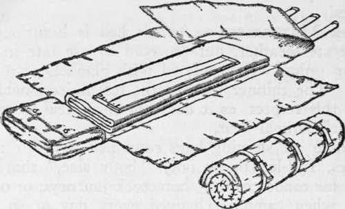
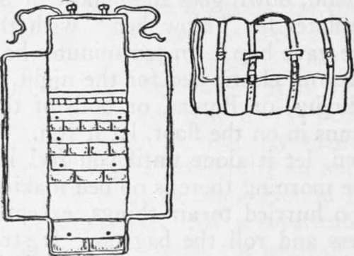
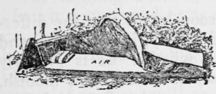
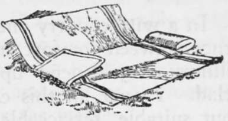
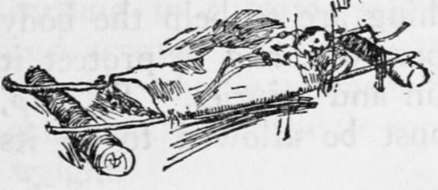
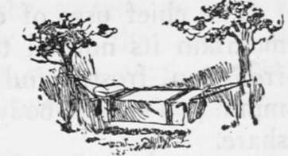
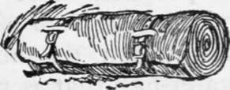

Camp Bedding. Part 4
Description
This section is from the book "Camping And Woodcraft", by Horace Kephart. Also available from Amazon: Camping and Woodcraft.
Camp Bedding. Part 4
As for the roof overhead, what I meant was that gun and duffel need protection, and so do you when you crawl out on a rainy morning. The weight of a sleeping-bag cover put into a little waterproof tent that you can carry in your pocket, and a ground sheet to go with it, will give you better protection from the elements at night and a sheltered place to dress and cook breakfast in. This for side trips from camp, or for long hikes.
Otherwise it is a matter of finding a proper sleeping bag, and I have tried here to make the essentials plain. Beyond this, one's personal taste must be the decisive factor. Let us hear from another old-timer, Emerson Hough:
" As to your bed, let us have one more whack at the sleeping bag — that accursed invention of a misguided soul. Leave your sleeping bag at home, in the Adiron-dacks or in the Minnesota woods. Take a pair of good wool blankets which will weigh not less than ten pounds — more weight is better. Don't despise a good wool comforter or a ' Katy' which will fold double and make a nice mattress under you. And whatever you do, don't fail to have for your own use a good, big bed 'tarp ' as it is known in the West. On the stock ranches we always used to have the tarpaulin of 20-oz. duck, about 7 x 14 ft., and sometimes it had harness hooks on it, sometimes not. It surely would turn rain. For the pack travel of today you will not need canvas of quite so much weight. But canvas and wool in abundance you surely should have for your bed. No hunting trip is a success when you don't sleep well and dry at night. Canvas and woo! together are the correct dope for the mountains. Take an air mattress if you insist, or if your dealer does: don't blame me if you sleep cold".
When all is said, plain blankets are cheaper than sleeping bags, and they can be used at home: that settles the matter for most folks.
Mattresses And Pillows
It is folly to sleep on bare ground if one can help it. A bed of balsam browse is not excelled, if properly made and frequently renewed; but it takes fully an hour to make one right, and on many a camp ground there is no browse, not even spruce. As a substitute one may use pine needles, grass, ferns, the moss off old fallen trees, or even dead leaves. Such stuff, however, packs hard and spreads from under one unless confined in a bag. For years I carried a bag of common bed ticking for this purpose, 2 1/2 feet wide by 6 1/4 feet long, and weighing only 1 1/3 pounds. Such a bag made of tanalite is more practical than any kind of carryall or bed-sheet, for it serves just as well to protect the bedding en route, and then is easy to turn into a mattress when you make camp. A pillow bag, similarly stuffed, with spare clothing atop, was not the least important item in my very light kit. When one has room, it pays to carry a small feather pillow or a down cushion about 12x18 inches.
Air Mattresses
An air bed is luxurious in moderate weather, but too cold to use late in the season unless well insulated with blankets or a felt pad. The thinner the bed the less objectionable it is in this respect, as it does not then steal so much of one's animal heat.
There are sleeping bags combined with air mattresses, full-length or only " body size," that are good for canoe cruising, horseback journeys, or other trips when camp is changed every day or so and good sites are not always to be found. They save much work, and sometimes a good deal of anxiety. There is then no night wood to cut, no browse to gather, no tent to trench, and little bother about smoothing the ground. Wherever one may be, in damp forest or on sandy dune, on rocky ground or mucky ground, down goes the bundle, it is unrolled, and one inflates his " blow bed " with the bellows that nature gave him. In ten minutes he is assured of a dry, warm, elastic bed for the night, in spite of Jupiter Pluvius, or Boreas, or both of them allied. If water runs in on the floor, let it run. If the tent blows down, let it alone until you feel like getting up. Come morning there is no bed making to do, if you are too hurried to air things, except to deflate the mattress and roll the bag up. It straps into a waterproof pack that stows conveniently anywhere.
But such a bed is quite expensive. For ordinary service, blankets and a bed tick will do just as well. In any case, study your health and your ease at night. There is a veteran's wisdom in what Chaun-cey Thomas says: " I go Camping to have a good time, and a third of that time is spent in bed".
Bed Rolls
If one carries loose blankets he will need a waterproof canvas cover to protect them en route and to serve as a ground sheet between them and the damp earth when he sleeps on the ground. A bed roll made with flaps at sides and end is best for this purpose. It is also a good thing when you sleep on a narrow cot, to keep cold air from coming up under the overhang of your blankets. The army regulation bed roll (Fig. 82) is one type. There is a pocket for spare clothing that serves as pillow, and the blankets and a folding cot are rolled up in the main part of the sheet, covered by the flaps, and strapped up.
Fig. 82. U. S. A. Regulation Bed Roll.
Fig. 83. Shattuck Camp Roll.
Another camp roll is shown in Fig. 83. It contains a detachable wall pocket for small articles, which is to be hung up in the tent, and bellows pockets at the end.
There is a combination carryall and bed (Fig. 84) that I think a good deal of. In principle it is, like the other bed rolls mentioned, but the bottom ia double and open at both ends. A pair of stiff poles convert it into a stretcher bed (Fig. 86) ; cross poles added and lashed at the ends make a hammock frame (Fig. 87). The double bottom serves as a bed tick, to be filled with browse, grass, or whatever soft stuff the camp site affords. The ends can be closed with horse-blanket pins, after stuffing the bag. The roll is made of 12-oz. army duck, and weighs 7 or 8 pounds. It can be had with blanket lining, but this I do not recommend. Use separate blankets; then you can have as much thickness under as over you.
Fig. 84. Comfort Sleeping Pocket.
Fig. 85. Combination Bed Roll, Stretcher Bed and Bed Tick.
Fig. 86. Combination as Stretcher Bed.
Fig. 87. Combination as Hammock.
Fig. 88. Combination as Bed Roll.
Continue to: